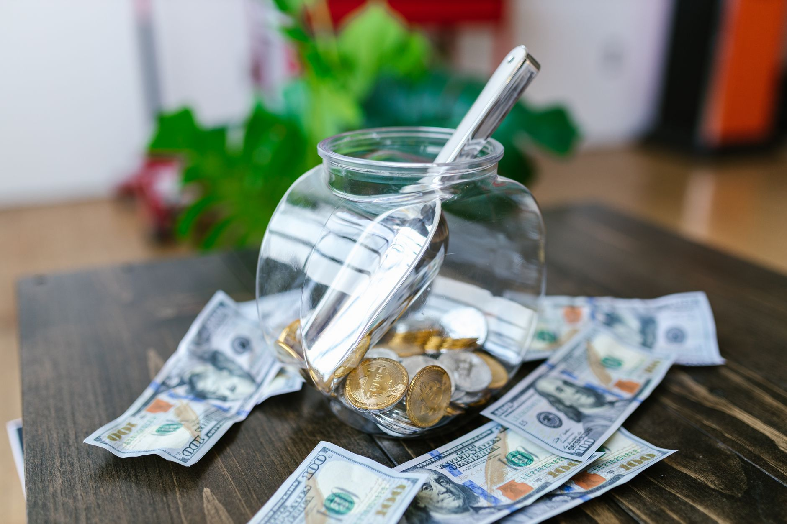

Are Morgan Silver Dollars a viable investment for retail buyers looking to enter the world of precious metals? The short answer is yes, they represent a tangible asset class with a long history and a compelling story in the investment market. At Fused Distribution, we stock Morgan Silver Dollars because we believe in the enduring value of silver and the stability these coins offer. For beginners and intermediate investors, understanding what makes these coins attractive - their intrinsic metal value, historical significance, and potential for appreciation - is the first step toward making an informed decision. We are here to guide you through the nuances of this investment, moving beyond the hype to focus on the fundamentals that truly matter for long-term wealth building.

This article will break down exactly why Morgan Silver Dollars have gained such traction in the precious metals market. We will explore the core investment principles behind these coins, discuss current market trends affecting silver prices, and provide practical advice on how to acquire them safely and strategically. We will also touch upon the different ways investors can use Morgan Silver Dollars, from holding them as a store of value to considering them within a broader portfolio strategy. Get ready to learn how to start your journey into silver investing with confidence.
Understanding What Morgan Silver Dollars Actually Are
At Fused Distribution, we stock Morgan Silver Dollars to provide you with a tangible piece of silver investment history. These coins are not just pretty pieces of metal; they represent a tangible asset with a long-standing reputation in the precious metals market. They are a specific type of silver coin that has attracted collectors and investors for generations.

When you invest in Morgan Silver Dollars, you are acquiring a physical commodity. This contrasts with purely digital assets, offering a real-world store of value. We recommend these coins for investors looking for a blend of historical significance and tangible investment potential.
We stock these coins because they offer a unique entry point into silver investing. Understanding their history and current market standing is the first step toward making an informed decision about your portfolio. Let us help you explore how Morgan Silver Dollars can fit into your long-term strategy.
The Historical Foundation Behind Morgan Silver Dollar Value
We stock Morgan Silver Dollars because they represent a tangible piece of American history and a proven store of value. These coins, minted during a period of significant economic transition, carry inherent historical weight that many investors seek in precious metals. Understanding their provenance is the first step in appreciating their potential investment worth.
The scarcity of these specific silver dollars, combined with their intrinsic metal content, makes them a compelling asset class. They are not merely collectibles; they are historical artifacts with tangible, enduring value. We recommend examining the historical context of their issuance to fully grasp why they hold significance in the silver and precious metals market.
Investing in Morgan Silver Dollars is about securing a piece of monetary heritage. By understanding the foundation of their value, you can make informed decisions about how to integrate these tangible assets into your long-term portfolio.
Current Market Valuation of Morgan Silver Dollars
We stock Morgan Silver Dollars as a tangible asset class with a long history of value appreciation. Understanding the current market valuation is the first step for any serious investor looking into silver and precious metals. These coins represent a blend of historical scarcity and intrinsic metal value, making them a compelling option for investors seeking diversification away from traditional assets.
The valuation of Morgan Dollars is influenced by several factors, including global silver prices, historical demand, and the specific grade and year of the coin. We recommend analyzing recent price trends to determine if the current entry point aligns with your long-term investment strategy.
We believe that Morgan Silver Dollars offer a tangible hedge against inflation and provide a stable store of value. By examining the current market data, you can assess the potential return on this classic investment. Contact us today to discuss how Morgan Silver Dollars can fit into your portfolio.
Key Factors Driving Morgan Silver Dollar Prices
We stock Morgan Silver Dollars because understanding the drivers behind their price movements is crucial for any serious silver and precious metals investor. Several interconnected factors influence the value of these specific bullion coins. Demand from institutional investors, such as central banks and large asset managers, plays a significant role in setting the baseline price. Also, global economic sentiment, particularly inflation data and geopolitical instability, often acts as a powerful trigger, pushing investors toward tangible assets like silver.
Supply dynamics are equally important. The availability of new silver bullion, including the supply from producers and the market for existing coins, directly impacts price discovery. When supply tightens relative to demand, as we often see during periods of economic uncertainty, prices tend to appreciate.
Finally, the intrinsic value of the silver itself remains a core component. Morgan Silver Dollars offer a tangible store of value, and their historical performance provides a benchmark for long-term holding. We recommend monitoring these macroeconomic indicators alongside the silver market to make informed decisions about your investment strategy.
Investment Strategies for Morgan Silver Dollars
We stock Morgan Silver Dollars because they represent a tangible asset with a long history of value. For beginner to intermediate investors looking into silver and precious metals, these coins offer a tangible way to participate in the market. They are a recognized and relatively accessible entry point into the world of silver investment.
Our recommendation is to view Morgan Silver Dollars as a stable component of a diversified portfolio rather than a speculative gamble. We advise assessing your personal risk tolerance before committing capital. Understanding the intrinsic value of silver and the historical performance of these specific coins will help inform your decision making.
We encourage you to explore how Morgan Silver Dollars fit into your overall financial goals. By starting with these established assets, you can build a solid foundation for long term wealth preservation and growth in the precious metals market. For more on this, see Johnson Matthee Silver Bars Guide.
Managing Risks in Morgan Silver Dollar Investment
We stock Morgan Silver Dollars as a tangible asset, and understanding the risks involved is crucial for any investor. While silver has historically offered potential for growth, the market is subject to volatility. We recommend approaching this investment with a long-term perspective rather than short-term speculation.
One primary risk is price fluctuation. Silver prices can move significantly based on global economic conditions, industrial demand, and currency strength. Diversification is key. We advise against putting all your investment into a single asset class. Spreading your holdings across different precious metals or asset categories helps mitigate the impact of any single market downturn.
Also, consider storage and liquidity. Proper, secure storage protects your investment from physical loss or theft. We encourage you to research reputable dealers and secure your dollars safely. By understanding these risks and employing a diversified strategy, you can navigate the silver market more confidently.
Comparing Morgan Silver Dollars to Other Precious Metals
We stock Morgan Silver Dollars as a compelling entry point into the world of precious metals investing. When comparing them to other precious metals like gold and platinum, Morgan Silver Dollars offer a unique blend of tangible value and accessible entry. They provide a direct, physical asset that many retail investors find appealing for long term holding strategies.
The primary difference lies in the specific metal and the investment vehicle. Gold is often seen as the benchmark, while silver, as represented by Morgan Dollars, offers different volatility and potential upside. We recommend considering Morgan Silver Dollars for investors looking to diversify their portfolio beyond traditional assets.
We stock these dollars because they represent a tangible store of value. By examining the historical performance and market dynamics of silver versus gold, you can determine how Morgan Silver Dollars fit into your overall investment goals. Let us help you explore how this specific asset class can enhance your wealth-building journey.
The Long-Term Outlook for Morgan Silver Dollar Investment
We believe that Morgan Silver Dollars represent a compelling long-term investment opportunity within the precious metals market. These coins offer a tangible asset class with inherent value, making them a staple for investors looking to diversify beyond traditional stock and bond portfolios. The intrinsic value of silver, combined with the collectible nature of Morgan Dollars, positions them as a unique holding.
We recommend viewing these coins not just as speculative assets but as a store of value. Historically, precious metals have performed well during periods of economic uncertainty, and Morgan Dollars provide a tangible link to that enduring strength. Careful accumulation and long-term holding strategies are key to maximizing potential returns in this sector.
For beginner to intermediate investors, starting with a diversified approach to precious metals, including established coins like the Morgan Silver Dollar, can be a smart way to enter this market. We stock these items with a focus on quality and historical significance, ensuring you are acquiring assets with proven appeal for the long haul.
Legal and Regulatory Aspects of Precious Metal Investing
We understand that investing in precious metals involves navigating a specific legal and regulatory market. Understanding these aspects is crucial for any retail investor looking to enter the silver and precious metals market safely and compliantly. Regulations vary by jurisdiction, so it is essential to familiarize yourself with the rules governing the purchase, storage, and eventual sale of these commodities.
When we stock silver, we adhere strictly to all applicable federal and state laws. This includes ensuring proper documentation for transactions and understanding any specific reporting requirements for your investment activities. We recommend that prospective investors consult with a qualified legal professional to tailor advice to your specific situation and location.
By being informed about the legal framework, you can build a solid foundation for your precious metals portfolio. We are here to guide you through the market, ensuring your investment journey is both profitable and entirely compliant with all relevant regulations.
Maximizing Your Returns on Morgan Silver Dollars
We stock Morgan Silver Dollars as a tangible and historically significant investment. For retail buyers and intermediate investors looking to diversify their portfolio, silver offers a unique hedge against inflation and a potential for substantial appreciation over time. Morgan Silver Dollars represent a secure store of value, backed by the intrinsic worth of silver, making them a compelling addition to any serious metal collection.
We recommend considering Morgan Silver Dollars as a core component of a balanced investment strategy. The silver market has shown resilience, and these coins provide a tangible asset that performs well during periods of economic uncertainty. Understanding the fundamentals of precious metals allows you to position yourself effectively in this growing asset class.
By investing in Morgan Silver Dollars, you are not just buying a coin; you are acquiring a piece of enduring value. We encourage you to explore how these tangible assets can contribute meaningfully to your long-term financial goals.
Related
- How To Buy Silver Coins At Spot Price
- Johnson Matthee Silver Bars Guide
- Silver Panda Coins From China: A Complete Guide
Read next: How To Buy Silver Coins At Spot Price